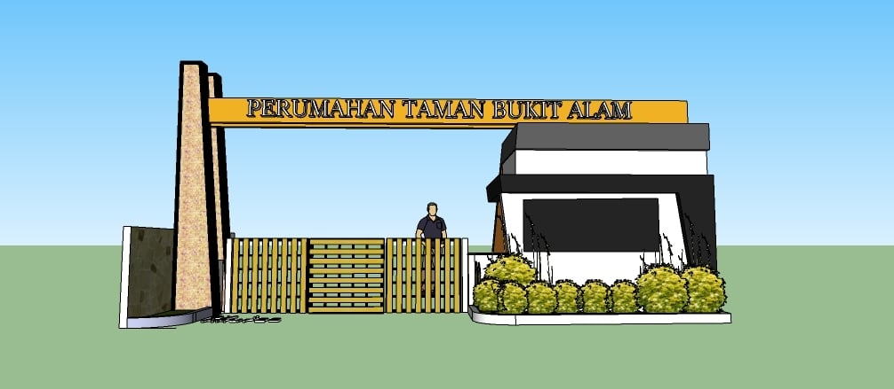
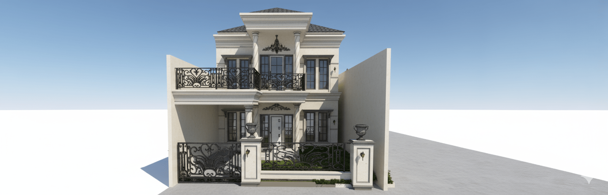
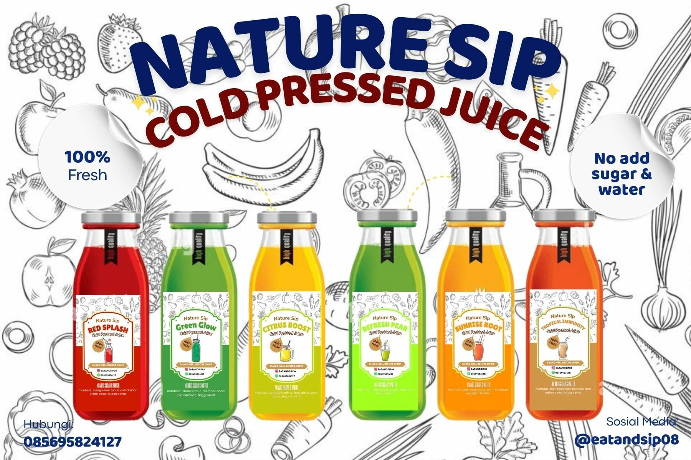

Chemical, Lean, Inventory Control, Industrial Engineer, Construction, Construction Design, Freelance Procurement/Purchasing, Design Graphic/Visual, Writer, Assistant
Profesional berpengalaman di bidang analisis laboratorium, teknik industri, dan technical support engineering dengan rekam jejak kuat dalam pemeliharaan instrumen, manajemen proyek, serta peningkatan efisiensi operasional.



Tertarik untuk berkolaborasi atau mendiskusikan peluang profesional? Silakan hubungi melalui: